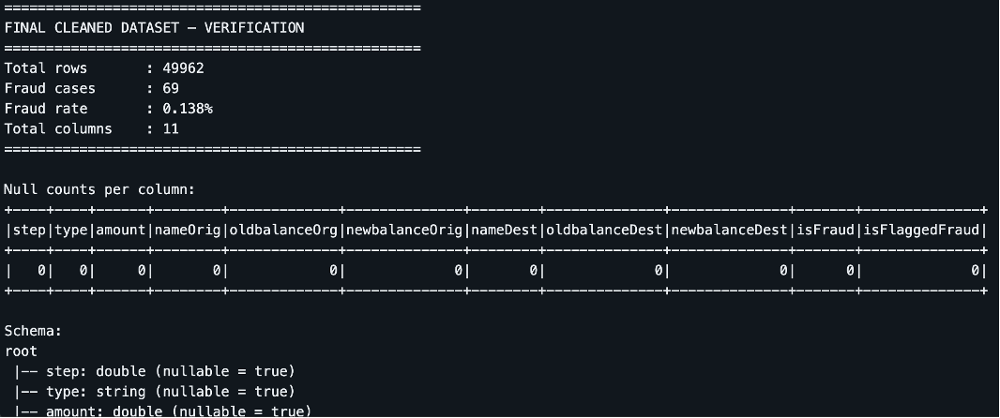
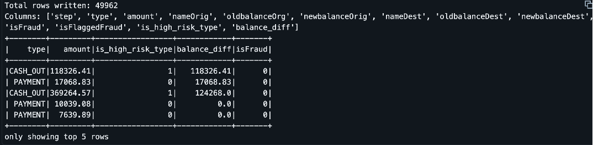
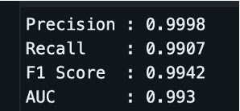
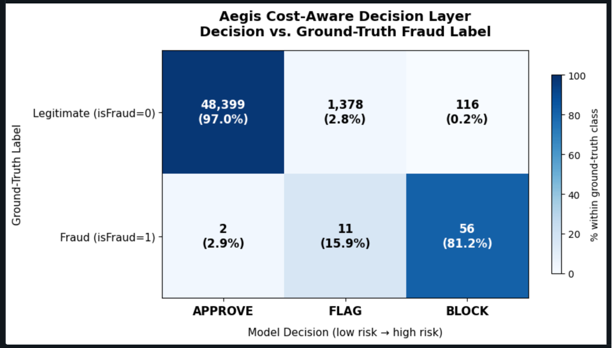
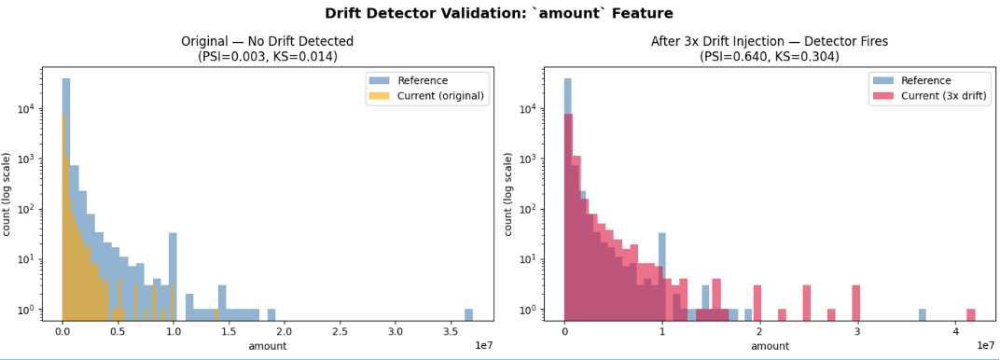
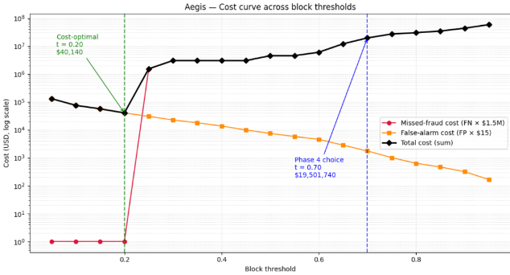

An end-to-end fraud detection pipeline built on PySpark and Databricks — integrating streaming ingestion, supervised classification under severe class imbalance, cost-aware decisioning, and statistical drift monitoring.
Fraud detection in production is a systems engineering challenge — not just a classification challenge. Most academic work stops at offline metrics. Aegis was built to close that gap.
Transactions arrive continuously. The pipeline must ingest, enrich, and score each one in real time using Spark Structured Streaming — not nightly batch jobs.
A missed fraud costs ~$1,500,000. A false alarm costs $15. The default 0.5 threshold treats both errors as equal. It isn't. The system replaces it with a cost-justified three-tier policy.
Only 0.138% of transactions are fraudulent. A naive model predicting "no fraud" everywhere would score 99.86% accuracy — and catch zero frauds. Class-weighted training is essential.
Fraudster behavior shifts over time. A model trained today may degrade silently. Aegis includes a dual-signal PSI + KS drift layer validated through a controlled 3× injection experiment.
Evaluated on PaySim — 49,962 transactions, 0.138% fraud rate — with all compute on free-tier Databricks Community Edition.
Each phase consumes the verified output of the previous phase as a Delta Lake table, mirroring production pipeline design patterns.
Cleaned the raw PaySim dataset (50,500 → 49,962 rows). Removed simulator artifacts —
column-shift label corruption and malformed amount values — using Spark's
try_cast operator. Verified all 11 columns null-free before persisting to Delta
Lake.
Wrapped the cleaned Delta table in a Spark Structured Streaming pipeline with
maxFilesPerTrigger=1 to simulate live transaction arrival. Engineered two
domain features inline: is_high_risk_type (TRANSFER/CASH_OUT binary flag) and
balance_diff (sender account drainage signal). Completed in 17.5 seconds across
49,963 rows.
Trained a 100-tree Random Forest on 7 features. Class weights of 356.45 (fraud) and 0.50
(non-fraud) computed analytically to address the 0.138% imbalance. 80/20 train-test split
(39,922 / 10,040 rows). Achieved F1 = 0.9942, AUC = 0.993 on the held-out set. Feature
ablation confirms balance_diff as the most informative single feature.
Replaced the default 0.5 cutoff with a three-tier policy anchored in a cost matrix: $1,500,000 per missed fraud vs. $15 per false alarm (a 100,000× asymmetry). Thresholds: APPROVE below 0.30, BLOCK above 0.70, FLAG in between for manual review. Catches 97.1% of fraud at only 0.23% false-positive rate on legitimate volume.
Applied Population Stability Index and Kolmogorov–Smirnov tests to all 7 model features on a temporal reference/current split. Validated via 3× amount injection: PSI rose from 0.003 to 0.640 (~190× increase), KS statistic from 0.014 to 0.304 (~22× increase), p-value collapsed to numerical zero. Detector fires on real drift and stays silent on stable data.
Swept thresholds from t = 0.05 to t = 0.95 in the cost space. Cost-theoretic minimum at t = 0.20 ($40,140 total cost, 2,676 false alarms). The operational t = 0.70 choice pays a $19.5M modeled premium to reduce the false-alarm queue 23× — justified by customer trust, queue capacity constraints, and regulatory exposure.
All figures generated from original Databricks notebooks. Click any image to view full size.

Final cleaned schema and null verification after removing 538 corrupted rows. All 11 columns confirmed null-free, 49,962 rows retained.

Sample output from the Spark Structured Streaming job with the two engineered
feature columns: is_high_risk_type and balance_diff.

Precision, Recall, F1 = 0.9942, and AUC = 0.993 on the 10,040-row held-out test set containing 13 fraud cases.

Cross-tabulation of APPROVE / FLAG / BLOCK decisions against ground-truth labels. 67 of 69 frauds caught; only 116 legitimate transactions incorrectly blocked (0.23%).

PSI and KS statistics before and after 3× amount injection. PSI rises from 0.003 to 0.640, confirming the detector is both specific (silent on stable data) and sensitive (fires on real drift).

19-point threshold sweep from t = 0.05 to t = 0.95. The operational t = 0.70 pays a $19.5M premium over the cost-theoretic optimum to achieve a 23× reduction in false alarms.
Built entirely on free, open-source tools. No paid infrastructure. No proprietary data.
Built to demonstrate production-grade ML engineering on industry-standard tools.
Supervised by Professor Xiangmin (Jim) Jiao, Ph.D., Stony Brook University.